2014/0530Fri洗濯機回し隊。574回目
お久しぶりに更新。
おはようございます。
元気です
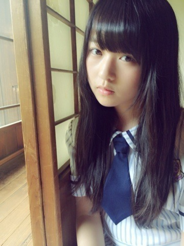
新制服だよ〜
これは白！ネクタイ！
公式では青のリボンの方です。
ワンピース一枚は楽だあ
そしてかわいい。
......
いよいよ
16人のプリンシパルtrois
始まります。
自分にとって苦しい思い出がある
舞台ですがその分得たものは大きい。
今回は稽古中、笑わない日は
ありませんでした、
誰がどの役をやっても面白いです！
二幕は
『レッツゴーっ！ポリン姫』
前回とは違ったシュールで
強烈なキャラクターで
いっぱいなんだ〜
そしてびっくりすることあるかも！
裏は今まで以上にバタバタしてます。
今回もやるしかない。
というか、楽しもう。
観にくるみなさんも
ぜひ楽しんでください。
そして思いっきり笑ってください！
初日よろしくお願いします！！
まりか
2014/0520Tue起きるのも瞬発力。 573回目
名古屋！
怒涛の2日間でしたわよ！
本当は全握の後にライブだったけど、
全握、個握、ライブ
の順にお話しします。
◇全国握手会
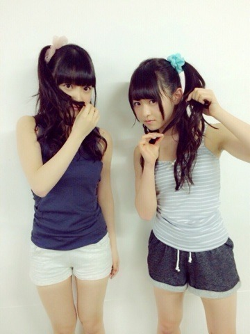
未央奈からこの髪型にしようと
提案がありおそろいにしたよ〜
髪型気づいてくれた方ありがとう！
月刊エンタメの感想ありがとう！
のんびりした握手で
未央奈のファンの方も
優しい方ばかりで楽しかった！
ありがとうございました。
◇個別握手会
1部
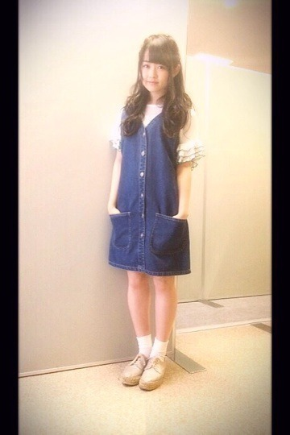
ジャンパースカート used
トップス
靴 GAIMO
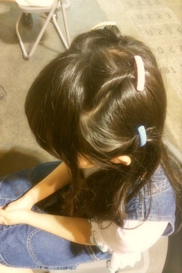
服装がシンプルだから4か所ねじって
クレアーズのピンでとめたよ。
2部
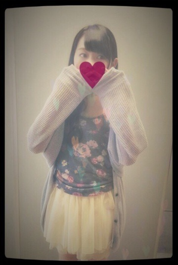
カーディガン KBF
キャミソール ?
チュチュ wc
3部
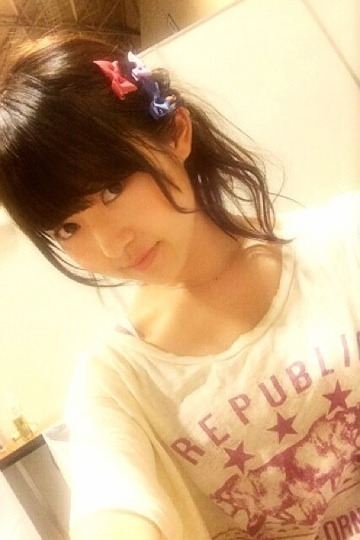
Tワンピ ZURI
私服はこんな感じでした！
アンダーライブ、選抜発表、メール
プリンシパルについて
が多かったかな。
次もまりっからしくやってやれ！
と言ってくれて嬉しかった。
やってやるよ！
◇アンダースペシャルライブ
8thアンダーライブ千秋楽ということで
渋谷で好評だったユニットのカバーも
新しく披露させていただきました！
せっかちなかたつむり
孤独兄弟
ダンケシェーン
孤独兄弟は伊藤ちゃんずで
歌わせていただきました...
体調不良で出られるかわからない
状況だったのに、ライブに出た寧々。
ありがとう！
千秋楽で歌えて嬉しかった。
万全な状態でまた一緒に歌おうね！
8thの期間、このメンバーで
たくさんのことができて良かった！
ライブは選抜メンバーも二期生も
みんな見てくれました。
終わった後に写真や動画
送ってくれて、、
あーのぎのぎっていいなあ
と改めて思いました。
みんな大好き！
次のアンダーライブ決まりました。
今野さんから発表あった！！
六本木ブルーシアター
■6月28日（土）
①開場11:00 開演12:00
②開場16:00 開演17:00
■6月29日（日）
①開場11:00 開演12:00
②開場16:00 開演17:00
■7月11日（金）
開場17:00 開演18:00
■7月12日（土）
①開場11:00 開演12:00
②開場16:00 開演17:00
このステージを用意して
くださったからには
もっと良いライブを
アンダーにしかできないライブを
みなさんと一緒に作り上げたいです。
9thでも盛り上げて行きます！
ぜひともよろしくお願いします。
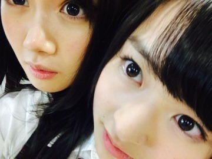
らりんハタチおめでとう！
この人、うざいくらいいじってくる。
いや、これ、みなさんの想像以上に
私へのいじり方半端ないんだよ笑
でもそういうところ好きなの！
ライブでもみんなを
まとめてくれてありがとう。
大人になっても変わらず
元気ならりんでいてねっ
最近1番好きな洋服屋さんはどこ？
最近、映画とかドラマ見た？
最近、映画とかドラマ見た？
▶︎古着の他に最近よく買うのは
ZURI、Another Edition、
Kastane、mysticかな。
ドラマは花子とアン、MOZU。
今見たい映画はヴィオレッタ！
以上！
おやすみなさい
まりか
2014/0516Fri人間測定。572回目
コメントありがとうございました！
励まされます。
応援ありがとう。
制作頑張ってますよ〜
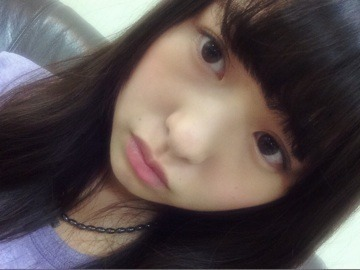
今日は撮影あった！
ぐっちゃぐちゃで楽しかった笑
プリンシパルのお稽古もやってます。
公式ページにプロフィール出た！
変幻自在のまりっか'18
だと！！！！！！！
ありがてえ！！！！！
ぼく、いろんなものに変身する！！
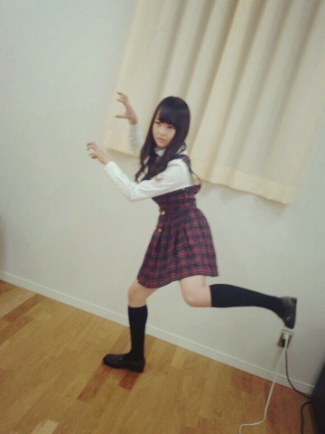
...
私は何系なのかなと考えてたら
愛嬌系女子でした。なるほど
他のメンバーのキャッチフレーズも
面白いから全部読むべし！
明日は名古屋全国握手会〜
15レーンで未央奈と一緒！
これは...
月刊エンタメコンビだね笑
わくわく
楽しそう。
ぜひ来てください〜
そして全握終わりに
アンダースペシャルライブ！
そして次の日は個別握手会！
なんか盛りだくさんだー
うわー楽しみうわー
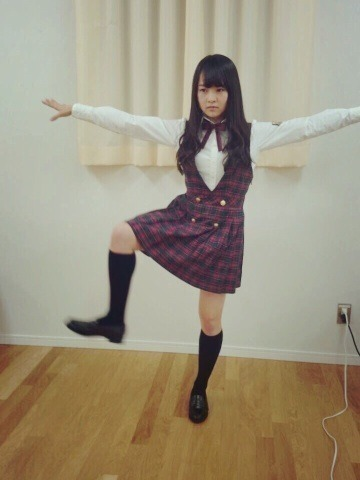
最近よく質問されるものに答える
大学生活、楽しんでる？
▶︎勉強楽しい〜
自分の興味があることしかないので。
楽しんで頑張っているよ！
絵はどういう風に考えて
描いてるの？テーマはあるの？
▶︎そのときの感覚で...
これ描きたい！って思って
イメージして下書きするけど、
描いてる内にいろいろ
思い浮かんできて
思うがままに付け足すように描く。
そしたらイメージしてたものと
全く違った絵になったりします。
だから完成品が最後まで
わからないのだけど、
そこも楽しみのひとつです。
自分がどんな感性を持っているかの
実験みたいなものかなあ
あの不定期コーナー
楽しみにしてる方が多いので
気合い入る...
玲香20歳おめでとう〜
いつもいじられてるけど、
やっぱりすごいなあと思う。
玲香はすごい人！
かっこいい
と、実は思ってるんだ。
いつもグループのこと考えてくれて
ありがとうございます。キャップ！
またご飯いこ〜
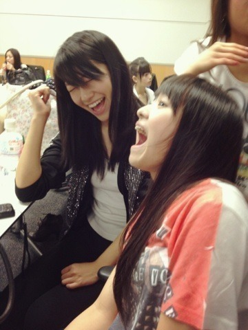
2年以上前の写真 笑
なんか楽しそう
変わってないなあ
まりか
2014/0512Mon強化。571回目
昨日9枚目シングル
選抜発表がありました！
私は今回もアンダーです。
特典映像、乃木坂の4人で
アンダーのことを悪く言わないで
と、私は言いました。
言い方も何も考えず
取材でぽろっと口にしてしまい、
応援してくれるみなさんに
心配をかけてしまいました。
でも、自分でそう口にしたからには
自分から変えなきゃと思って
全力で活動していきました。
全力で頑張ったのに
なぜ選抜に入れないんだろう
って考えるのはやめよう。
だってみんな全力で頑張ってる
選抜もアンダーも二期生も
選抜の枠では収まり切らないくらい
全員が魅力的なんです。
そんなみんなのことが大好きで、
尊敬していて憧れています。
8thではアンダー盤CDを出す
アンダーライブを開催する等
露出を増やそうと考えて下さった
運営の方に本当に感謝。
そのおかげで
MVやライブなどを見て
アンダーすごいんだね！
って言ってもらうことが
増えてきました。
8thのアンダーメンバーで
新しいことをたくさんしてきた分、
選抜になったアンダーメンバー
のことを心から祝福しました！
本当におめでとう！！
乃木どこ収録に出る機会が少なくて
メディア露出も少ないけど、
メンバー個人の仕事が増えてる。
アンダーメンバーもどんどん
強くなってきている分、
埋れてしまわないように
私個人としても
頑張らなきゃいけません。
負けてられません。
自分自身もっと
変えていかなきゃいけない。
選抜とアンダーの
壁を壊す存在になりたい。
いつも応援してくださるみなさん
ありがとうございます。
万理華はもっと上にいける
と言ってくださる言葉、
忘れていません！
これからも乃木坂46を
応援よろしくお願いします！
伊藤万理華
2014/0511Sun吐きそうなくらい好 きだ。570回目
BOMB発売中！
日芽香と飛鳥と私の3人が
プリンシパルについて語ってます
チェックしてね！
ね！
プリンシパルの稽古の日々。
大変だが頑張ってます。
楽しんでる！
／
描いたり作ったりなんかしらしたら
載せてみるこーなー
＼
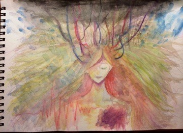
嬉しいことに、
家が色鉛筆に溢れてます。
幸せだー
今日は母の日。
私のお母さんは
自分を持っている人
昔からお母さんの服を
お下がりで着てたので、
昔から渋好み。
中学生のときの好きな色は
カーキと紫でした。
明るい色の服は着る勇気がなくて
避けていました。
年を重ねるにつれて
お母さんとの趣味が合うように
なってきてるし、
昔は嫌がっていたものも
好きになってきてるし、
影響されまくりだな〜
と実感しています。
私のお母さんがお母さん
じゃなかったらどうなってたんだろう
最近、自分でクラッチバッグを
作ったそうです。
そんなお母さんが好きです。
師匠！リスペクト！！
まりっかはメガネ買うとしたら
何色が好き？
▶︎べっ甲。
今使ってるのもべっ甲！
ヴィンテージの細縁も好き！
言いたいことがあったら
その時点で一番上に上がってる
ブログにコメントしちゃって
良いのかな？？
▶︎最近ブログ更新率
下がってしまっていてごめんなさい。
もちろん！コメント全部
しっかり読んでます〜
報告でもなんでも
メールの返信でもしてちょうだい
僕は...
どんな壁も、
乗り越えるんだ！！！！
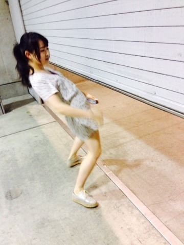
見てろ
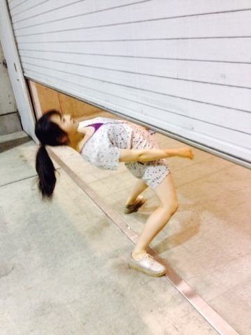
お、
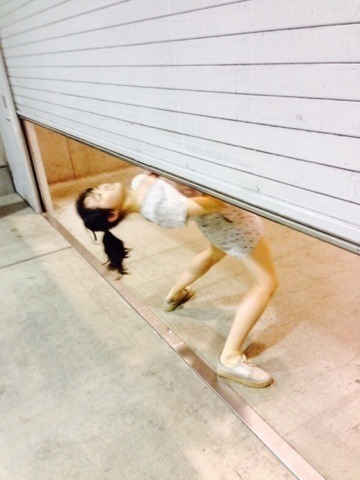
うおおおお
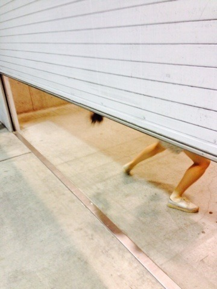
おああああああ
よっしゃああああああああああああ
まりか